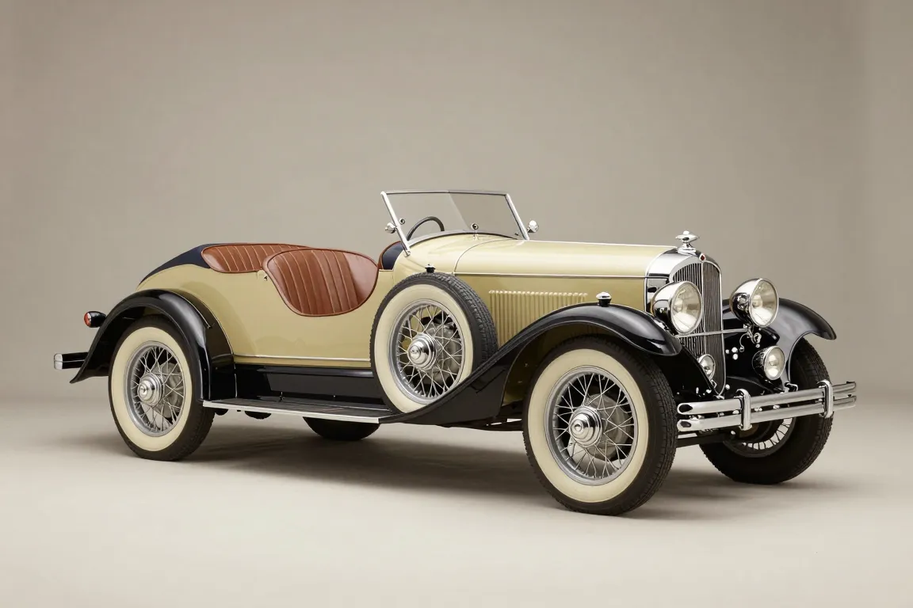

мода · 1919–1939 · также: Классика каретной работы, Старинный люксовый автомобиль, Довоенный большой автомобиль
Довоенный люксовый автомобиль. Длинный капот на голом шасси, с кузовом, который каретник сделал на заказ из алюминия по дереву. Салон из кожи, ореха и ткани.

Главная идея
Хороший автомобиль — это две работы. Мастер строит шасси. Каретник делает кузов и салон по вкусу одного покупателя.
Принципы дизайна
Делайте капот 40–50 процентов длины автомобиля, с вертикальным радиатором в его передней части.
Стройте кузов на ясеневом каркасе и обшивайте выколоченными вручную алюминиевыми панелями.
Держите крылья отдельно от кузова, длинным размахом от каждого колеса.
Отделывайте салон шпоном капа ореха на приборной панели и накладках дверей.
Обтягивайте сиденья выделанной кожей, а задний отсек шерстяной тканью или шёлковым дамастом.
Хромируйте или никелируйте фары, радиатор и бамперы и держите покрытие ярким.
Красьте в два тона, один для кузова и один для крыльев или крыши, с каретной линией между ними.